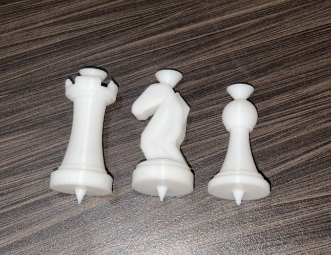
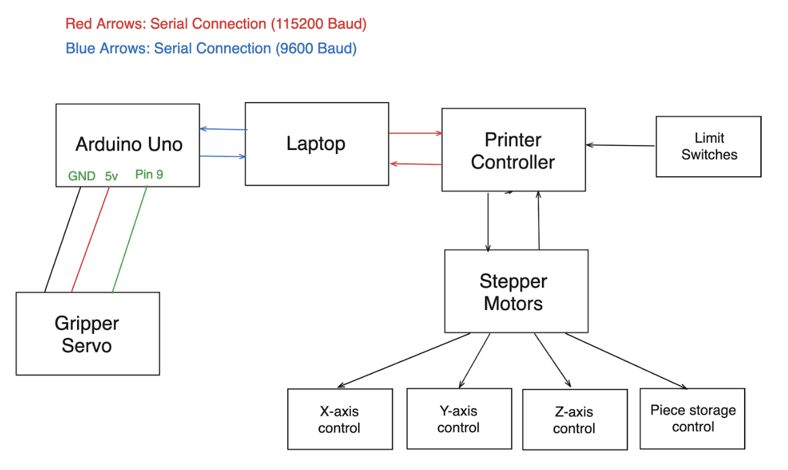

I wanted to play online chess on a physical board, as well as against an AI. This project is still a work in progress, but here are the main goals I set out to achieve:
So far, I have a working system that uses stockfish as the chess engine. A user can make a move, the robot will calculate it's move, and move the piece. I've found the python-chess library to be very useful for this project.
One of my dream projects is to build a CNC milling machine from scratch. While this chess project isn’t in the same realm, many of the same principles apply.
I developed a custom gripper to pick up and move chess pieces. The gripper is controlled by an Arduino, which receives commands from the main Python program. A cheap, 9g micro servo acts as the gripperm mechanism, and a conically shaped end fits into the chess pieces. Due to the conical shape, it also acts as an autocentering mechanism, allowing for some tolerance in positioning.
# Main Chess Game
def main():
# Initialize robot
printer_ser = initialize_printer()
gripper = ArduinoController()
gripper.connect()
# Home the robot
send_gcode(printer_ser, "G28")
send_gcode(printer_ser, "G1 X0 Y220 Z75 F5000")
stockfish_path = "stockfish"
engine = chess.engine.SimpleEngine.popen_uci(stockfish_path)
# Set skill level
# 0 = easiest
# 20 = hardest
engine.configure({"Skill Level": 1})
board = chess.Board()
print("Welcome to Robot Chess! You play as White.")
print("Enter moves in UCI format (e.g., 'e2e4'). Type 'exit' to quit.\n")
while not board.is_game_over():
print(board)
print("FEN:", board.fen())
# User (White) move
user_move = input("Your move: ").strip()
if user_move.lower() == "exit":
break
try:
move = chess.Move.from_uci(user_move)
if move not in board.legal_moves:
print("Illegal move. Try again.\n")
continue
board.push(move)
except Exception:
print("Invalid move format. Use UCI (e.g., 'e2e4').\n")
continue
if board.is_game_over():
break
# Computer (Black) move
print("Computer thinking...")
result = engine.play(board, chess.engine.Limit(time=1))
computer_move = result.move
piece = board.piece_at(computer_move.from_square)
if piece:
print(f"Computer will move {piece.symbol().lower()} (height {piece_height(piece.piece_type)})")
# Pre-capture handled in execute_move
execute_move(printer_ser, gripper, str(computer_move), board)
board.push(computer_move)
print(f"Computer plays: {computer_move}\n")
print(board)
print("Final FEN:", board.fen())
print("Game over:", board.result())
engine.quit()
if printer_ser.is_open:
printer_ser.close()
print("Robot connection closed.")
Above is a snippet of the main chess game loop. The user plays as white and inputs moves in UCI format (e.g., "e2e4"). The robot uses Stockfish to calculate its move, which is then executed on the physical board using G-code commands sent to the robot.
The chess pieces were 3D printed using PLA filament on my Bambu Lab A1 Mini. I designed the pieces in AutoDesk Inventor. The key features I added were the cones on the top which the gripper grabs onto, and the indexing pins on the bottom which ensure the pieces are always centered on the squares.
The wiring for the robot is really straightfotward. The Arduino controls the servo gripper, while the main computer runs the Python code and sends G-code commands to the robot via serial communication. The printer control is connected to the laptop via serial.